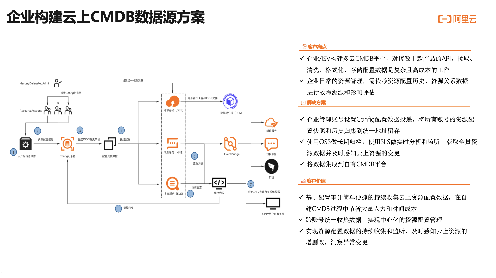

该方案有何用途？
- 现今企业大多采用多云架构来部署云上应用，以提升应用的稳定性同时避免被单个云平台捆绑。但多云架构就意味着，没有任何一个云平台的管控体系能完整支持企业的资源管理需求。企业往往自建统一的资源管理平台或使用第三方服务商提供的多云资源管理软件。资源管理平台（CMDB）最重要的是构建完整可靠的底层数据，需要获取各个云平台的所有资源配置数据，对数据进行持续的下载、数据格式抽象统一、数据清洗、资源关系解析和长期留存等处理，用可靠的数据支持基于资源数据构建的运维管理流程和Devops程序。当使用的云平台比较多、使用云产品比较多样、云上部署规模越来越大时，这份自建数据的维护将会消耗巨大的人力和时间成本。
- 本方案指导企业客户在多账号的云上IT架构下，一站式的采集全量资源配置数据、资源配置历史、资源关系数据，将这些数据稳妥留存并快捷消费到自有的CMDB平台，加快企业自有CMDB的构建。
客户侧需要该方案的问题场景
- 1. 企业为多云部署，需要自建CMDB平台（资源管理/面向应用的运维管理）或向第三方成品软件上报云上的资源配置数据。
- 2. 企业在内部日常运维中需依赖资源配置数据。如获取所有云上资源列表和资源配置进行资产盘查，如追溯资源的配置变更历史定位故障起源，如在进行资源变更前或发生故障后盘点资源关系以确定影响范围等。
